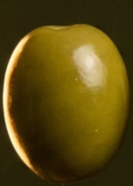
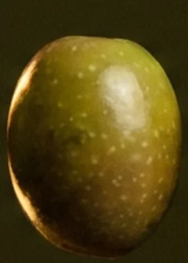
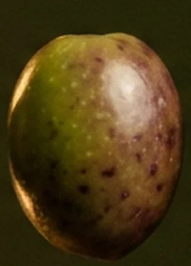
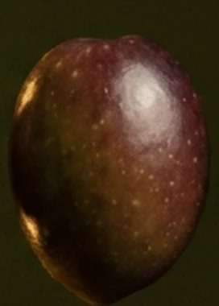
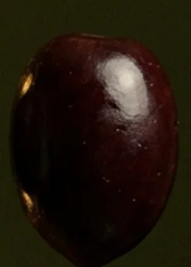

01Imersão
Escutamos a história do negócio, quem está por trás dele e para quem ele existe. Olhamos o que a marca já comunica hoje.
Design com essência, conceito e estratégia.
Cada identidade parte de estudo e conceito. Nada é só estético.
Uma marca à altura do que o seu negócio já é.
Quero construir minha marcaMuito negócio bom ainda se apresenta com uma marca que não conta quem ele é. A história está lá, o cuidado está lá, mas o logotipo, as cores e a forma de falar não mostram isso.
A Olive cria identidades para esses negócios. Traduzimos a essência de cada um em símbolos, cores e linguagem que comunicam valor e criam raízes no mercado.
Os projetos aparecem aqui como estudos de caso: o conceito que guiou a criação, o significado de cada escolha e o que mudou para o negócio.
Como uma azeitona que amadurece: cada etapa prepara a próxima.

01Escutamos a história do negócio, quem está por trás dele e para quem ele existe. Olhamos o que a marca já comunica hoje.

02Posicionamento, público e diferenciais definidos. Fica claro o que a marca precisa dizer, e o que ela não precisa.

03Uma ideia central que orienta o projeto. Cada forma, cor e palavra responde a ela.

04Logotipo, paleta, tipografia e elementos visuais desenhados a partir do conceito.

05Arquivos organizados, aplicações combinadas no projeto e a explicação de cada escolha, para você usar a marca com segurança.
O centro do trabalho é a construção da marca. As aplicações vêm como parte dela, conforme o que cada projeto pede.
Criação de uma identidade que traduz a essência do negócio em logotipo, cores, tipografia e elementos visuais, com coerência, personalidade e reconhecimento.
Estudo da história, do propósito, do público e dos diferenciais do negócio para definir o posicionamento e o conceito que orientam a criação da identidade visual.
Desdobramento da identidade nos pontos de contato essenciais da marca, como papelaria, embalagens e materiais digitais, conforme as necessidades de cada projeto.
À frente da Olive está Tamiris de Oliveira, designer estrategista em Jaguaruna/SC, atendendo marcas de todo o Brasil.
Você fala direto com quem estuda o seu negócio e cria a sua identidade, do primeiro encontro à entrega.
Conte um pouco sobre o seu negócio. A resposta chega por e-mail ou WhatsApp. Se preferir, chame direto no WhatsApp.